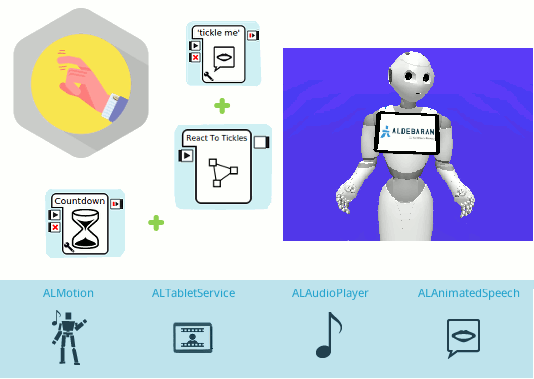
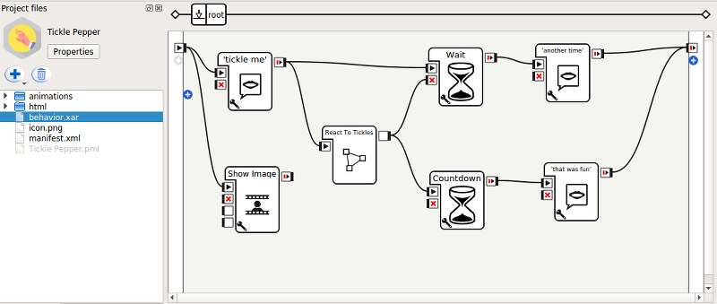
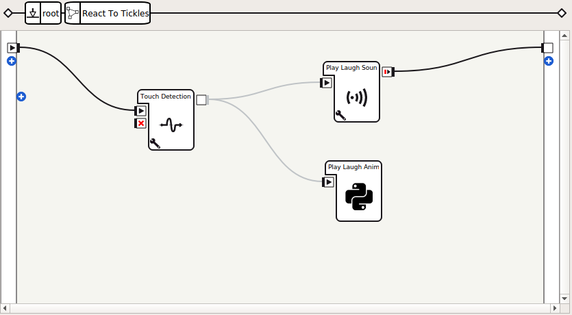
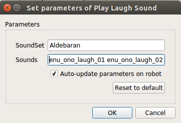

Sample 2: a first interactive application¶
Here is a simple interactive application.
Content outline: Pepper asks to be tickled, laughs if tickled, and exits after fifteen seconds without being tickled.
Guided Tour¶
Let’s discover how it works.
The main behavior of this application contains 7 boxes:
5 Standard Boxes: 3 Animated Say boxes (tickle me, another time and that was fun), Show Image box and a Wait box.
2 custom boxes: React to Tickles and Countdown.

Global overview
As a general overview, the behavior does the following:
The robot says “Tickle me!” and displays an image in his tablet that will stay during the whole behavior.
The robot reacts to the “tickle” every time his tablet is touched.
The behavior will exit if the robot’s tablet is not touched for 15 seconds.
Before exiting, the robot will say “That was fun!” if the tablet was touched at least once, otherwise he will say “Okay, another time then”.
React to Tickles¶
Aim
Ensure that Pepper:
- listens to the tablet’s On touch down event,
- reacts by playing a sound and/or animation every time the previous event is raised,
- does not play several sounds at the same time,
- does not play several animations at the same time.
How it works
This box will be triggered after the first Animated Say box, named tickle me. This box has a onTickle output that will get triggered once the robot detects and reacts to the tablet touch. When this output is triggered, the Wait box that was started in parallel is stopped. Note that the Wait box is used to set a timer that will allow to exit automatically in case the tablet is not touched during the behavior’s first fifteen seconds.
Double-click the React to Tickles box to open it.
This box contains a diagram with 3 boxes: a Touch Detection box, and 2 custom boxes: Play Laugh Sound and Play Laugh Animation.
The Touch Detection box has been parametrized to listen to the On touch down tablet event. Both custom boxes are directly linked to the onTouched output of the Touch Detection box. This means that both will be triggered after the previous event has been detected.
The Play Laugh Animation box is in charge of playing randomly one of the animations contained in the animations folder and that are tagged as tickle. This box also prevents playing an animation if another one is already being played.
Double-click the Play Laugh Animation box to open it.
class MyClass(GeneratedClass):
def onLoad(self):
self.finished = True
self.animPlayer = ALProxy("ALAnimationPlayer")
def onInput_onStart(self):
if self.finished:
self.finished = False
self.animPlayer.runTag(self.packageUid() + "/animations/", "tickle")
self.finished = True
self.onStopped()
The Play Laugh Sound is in charge of playing randomly one of the chosen Sounds contained in Aldebaran’s Soundset. This box also prevents playing a sound if another one is already being played.
Double-click the Play Laugh Sound box to open it.
import random
class MyClass(GeneratedClass):
def onLoad(self):
self.finished = True
self.audioPlayer = ALProxy("ALAudioPlayer")
self.soundSet = self.getParameter("SoundSet")
self.sounds = self.getParameter("Sounds")
def onInput_onStart(self):
if self.finished:
self.finished = False
# Verify if the Soundset is installed and loaded
if self.soundset in self.audioPlayer.getLoadedSoundSetsList():
sound = random.choice(self.sounds.split())
self.audioPlayer.playSoundSetFile(self.soundset, sound)
else:
self.log("Soundset not installed: " + str(self.soundset))
self.finished = True
self.onStopped()
Notice that the SoundSet and the Sounds are defined as parameters.
Each time a sound has been played, the React to Tickles output is triggered since this means that the robot has reacted to a tablet touch.
Countdown¶
Aim
Ensure that Pepper:
- does not stay blocked in the behavior when the tablet is not touched anymore.
How it works
This box functions as a timer that is reset when the React to Tickles box output is triggered. If the timer reaches to its end, it means that the tablet has not been touched for fifteen seconds and the behavior must be stopped.
Double-click the Countdown box to open it.
class MyClass(GeneratedClass):
def onLoad(self):
import threading
self.running = False
self.lock = threading.Lock()
def onUnload(self):
self.running = False
def onInput_onStart(self):
import time
with self.lock:
# Regardless of whether the box is already running or not, reset it
self.seconds_left = self.getParameter("Seconds")
if self.running:
# the box is already running
return
self.running = True
# This part of the code will only be reached by the first call.
while self.running and self.seconds_left > 0:
time.sleep(1.0)
self.seconds_left -= 1
# timeout is finished, trigger output.
with self.lock:
if self.running:
self.running = False
self.onStopped()
def onInput_onStop(self):
self.onUnload() # clean up
Some notes on this box:
- Its time is approximate (when reset, it will not take exactly fifteen seconds before its output is triggered).
- This box blocks one thread while running.
Try it!¶
Try the application.
| Step | Action |
|---|---|
In the Robot applications panel panel, click the
 Package and install the current project on the robot button.
Package and install the current project on the robot button. |
|
Make sure autonomous life is on. If not, click the |
|
Launch the application: Orally
Through the tablet
|
|
| Tickle Pepper: touch Pepper‘s tablet repetitively. |
 Turn autonomous life on button.
Turn autonomous life on button.{kind=link}
{kind=link}
{kind=link}
You may also try the behavior only, by clicking on the  Play button.
Play button.
Note that this example only works correctly on a real Pepper, since Soundset Aldebaran and ALTabletService are not present on a virtual robot.
Make it yours!¶
Try changing the reaction of the robot or adding another Touch box, like the Tactile Head box.
Want to package it?¶
| Step | Action |
|---|---|
Customize its properties. You can keep most of the properties as they are, but the following ones must be adapted:
|
|
| Package it. |